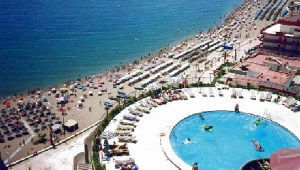

Piriódico:Bárcenas sale de la cárcel como una rosa
 De: La Frikipedia, la enciclopedia extremadamente seria.
De: La Frikipedia, la enciclopedia extremadamente seria.
Tras catorce meses en la sombra de una triste celda, lo único que puede declarar es:<<Se me acabó el año sabático>>
Luis Bárcenas vuelve de Marina D´or la prisión
El 21 de enero de 2015, sale de prisión Luis Bárcenas y nos comunica (solo para ustedes) su día a día en la prisión de cinco estrellas.
 Prisión en cuestión a vista de pájaro.
- Karurosu:Buenas tardes, señor Bárcenas. ¿Cómo se le ha hecho el tiempo en prisión?
- Bárcenas:Pues se me ha hecho bastante corto.
- K:Ah, bueno, ¿podría decirme, se aburría mucho allí?
- B[1]:No, que va, habían varias actividades.
- K:¿Como cuáles?
- B:Lo típico: Había piscina, biblioteca, sala de recreativos, pista de tenis, de fútbol, de hockey, de voley, canchas de baloncesto, salas de ping-pong, pistas de esquí, snowboard, paintball, cine, teatro, tirolina, parapente... Por cierto, ¿puedo enviar un mensaje para un lector muy especial?
- K:S... Sí, por supuesto.
- B:Urdangarín, cuando vengas te recomiendo las pistas de balón-mano.
- K:B... Bueno, cambiando de tema, ¿cómo era la celda?
- B:Bueno, no era para tanto.
- K:¿De verdad?
- B:Sí, bueno, era un duplex de dos habitaciones y tres baños, tenía una tarima flotante, un salón con unas ventanas que daban a las pistas de patinaje artístico, Wi-fi, Bluetooth, unas cuatro sirvientas profesionales, un balcón que daba al teatro y había allí un ordenador de última generación con linux instalado...
- K:¿Y qué me dice de su compañero?
- B:Era un señor que defraudó a todo su país y, bueno, tenía visado permanente.
- K:¿Qué tal estaba la comida?
- B:Eso fue lo peor.
- K:¿Por qué?
- B:Porque verá, había buffet libre en el que cada día se ponían distintos platos tradicionales de cada país del mundo y uno de ellos fue Italia y tocaba pizza, tortelini, vino para beber; pero, desgraciadamente, no había de lo que a mí me gustaba: pasta.
- K:Y ahora, ¿cómo se siente?
- B:Me siento con ganas de seguir saqueando las arcas del estado y tirar de la manta del PP, hasta que vuelva a entrar.
- K:Bueno, pues creo que nos despedimos, gracias una vez más por su colaboración, señor Bárcenas.
- B:Tanto gusto, y te digo otra cosa, que la próxima vez que vuelva allí, probaré primero la sauna y las aguas termales, que no he tenido tiempo en catorce meses.
Después de esto, parece que Karurosu se pensará si hacerse o no tesorero del PP.
Notas
- ↑ Cobraba en B.
Autor(es):
- Barman el camarero oscuro
Frikipedia 2005-2016, Licencia
GFDL 1.2 - Extraído por FrikiLeaks